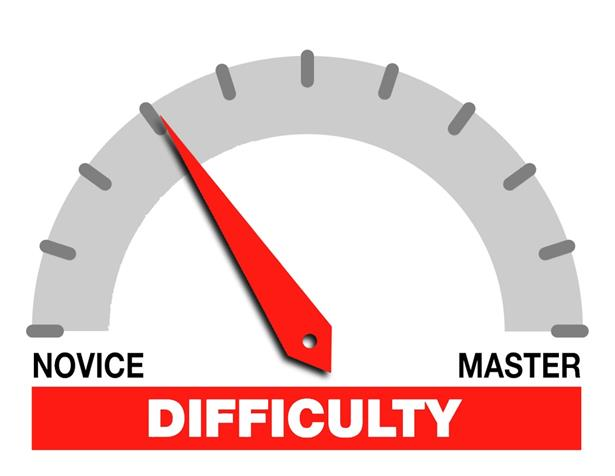

With the continuous progress of Internet technology, the network platform has gradually entered everyone’s life, providing a platform for ordinary people to express their ideas. Since the occurrence of COVID-19, monitoring and analyzing public opinion on the Internet platform has become more practical. Through timely monitoring and analysis, it is of great practical significance for the relevant departments to analyze and control sentiment information and stabilize and guide public sentiment. Therefore, it is essential and of practical significance to select a suitable model for classifying and analyzing public opinion on the Internet platform. This paper reviews the development of word vector technology from the perspective of technology development and then lead to the more advanced Bidirectional Encoder Representations from Transformers (BERT) model with great significance. On this basis, this paper fine-tunes the pre-trained Bert model. It applies the transfer learning strategy to analyzing the public sentiment of the occurrence of COVID-19 during the recent epidemic in Shanghai based on Sina Weibo data. In addition, tests are conducted to compare the model with the previous models. The experimental results show that the Bert model has significant advantages over the traditional model in character vector encoding and feature extraction. But the more I though about it, the more I wondered to myself…damn that’s a really great question; it’s one that deserves some more thought. Most people I think stop at the answer I gave previously - he obviously isn’t managing his time properly.
Here’s what I think: the difficult things will always be difficult.
In the context of programming, this has always been true. The difficult problems have always been different, although changes in technology can change the landscape quite a bit. “Business” type applications are the things that come to mind for me. Those types of applications are usually coupled in some way with people … and people are awfully hard to deal with!
Consider that one of the most popular content management systems is also considered the most horrible - Wordpress. But really, is there anything that fills that need? If it was so easy in the first place, where is the solution? Where’s the magic CMS that is designed well enough that everyone hops on the boat to use it?
Some things are just difficult - building applications that humans use is hard, and will probably be hard for at least the near future.
Ever hear people ragging on engineering companies for delivering late and way over budget? Well, some engineering jobs are really difficult, especially if the requirements and funding are undulating underneath you. Because of the nature of the problem, sometimes engineering firms require large amounts of engineers and workers, inviting further problems and delays.
The Honolulu Rail project at home has become this sort of poster child of failure, budget overrun and overall incompetence in Hawaii. Well, working though regulatory boards and fiscal procedures in Hawaii seems like it’s a mind bogglingly difficult job to do. Granted, there might be some fishy stuff going on, but I refuse to believe that everyone is involved for nefarious reasons.
The problem of creating an unprecedented public transportation backbone on an island is difficult! I’m not sure we would have done it right, even if the best people were involved.
So in the end, we realize that all engineering and programming is there for a reason - to serve human needs. Maybe that’s why those things are difficult, because they both involve humans and are for humans.
Relationships, regardless if they’re romantic or not take work. Humans are fickle creatures and relationships can come and go with the wind. To properly maintain something over time requires work. Family takes work. Marriage takes work. We live to figure out what works and what doesn’t and hope that as we move forward we’re improving.
Relationships have always been difficult, and by nature will continue to be so.
So back to the original premise; why is being one of the club officers so difficult?
And the final answer - it’s supposed to be difficult, and it’s supposed to challenge you, just like everything else that humans do that is difficult: programming, engineering, engaging in relationships, pondering the universe, etc.
Ultimately the question you should really ask yourself if something if particularly difficult is then “is it worth it”? That is something that is context specific and only you can answer yourself.